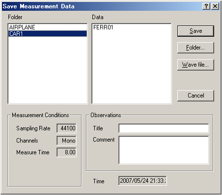
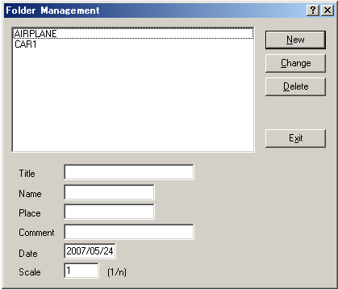

DSSF3 > RA > Reference Manual > Running ACF

| Field | Description |
|---|---|
| Folder | The folders, in which the measured data are stored, are listed. |
| Measurement Conditions | The measurement conditions of measured data are indicated. |
| Observations | Input the information about the data to save. |
| Title | Input data's name. |
| Comment | You can make optional comments upon the data. |
| Time | The time and date when data were measured. |
| Save | Saving is carried out |
| Folder... | The folders in which the data are stored are managed. You can create a new folder, alter the information such as folder's name, and delete a folder. ( -> Explained in the following section.) |
| Wave file | Saves as a Wave file. |
| Cancel | Closes this dialogue, without doing anything. |

| Field and button | Description | |
|---|---|---|
| - | The folders, in which the measured data are stored, are listed. | |
| Information about the folder. | ||
| Title | Folder's name | |
| Name | The person who carried out the measurement. (Optional) | |
| Place | The place where the measurement was done. (Optional) | |
| Comment | Optional information. (Optional) | |
| Date | The date when the folder was created. It is set automatically. | |
| Scale | In the case of experiment with a model, its scale is inputted. | |
| New | Creates a new folder, which has the information you have inputted to (2). The new folder appears in the list box . | |
| Change | Changes the information about the folder which is selected in the list box. Select the folder in the list box, and the information about this folder is displayed in (2). Alter the information in (2) and then click this [Change] button. |
|
| Delete | Deletes the folder which is selected in the list box. | |
DSSF3 > RA > Reference Manual > Running ACF